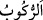

72. Bu hayvanları onların emrine verdik. Onların bazısını binek olarak kullanırlar,
bazısını besin olarak yerler.
“Bu hayvanları onların emrine verdik.”
“__WORD__ hor ve zelil kılmak, boyun eğdirmek demektir. “__WORD__ ve “__WORD__ zorluğun
zıddıdır. el-Müfredât’ta der ki: “__WORD__ Cebir neticesinde meydana gelen horlanma ve
aşağılanmadır. “__WORD__ ise başkasının baskısı olmaksızın serkeşlik ve direnmeden sonra
meydana gelen zillet/alçalmadır.
Mânâ şöyledir: O hayvanları onlara boyun eğer hale getirdik. Öyle ki o hayvanlar çok
güçlü olmalarına rağmen sahiplerinin onlara binmelerine, yük yüklemelerine, istedikleri
yere onları sürüp götürmelerine, hatta onları boğazlayıp kesmelerine karşı onlara hiç
serkeşlik etmezler. İşte bu görünen nimetlerden bir nimettir. Bu sebeple Allah Teâlâ
süvârinin veya herhangi bir binek vâsıtasına binenin bu nimete şükretmesini “Bunu
bizim hizmetimize vereni tesbih ve takdis ederiz, yoksa biz bunlara güç
yetiremezdik.” (ez-Zuhruf, 43/13-14) diyerek Allah’ı tesbih etmesini istemiştir.
“Onların bazısını binek olarak kullanırlar” Yâni o hayvanların bazıları onların
bineğidir. Onların faydalarının çoğu binek olmaları ve uzak mesafeleri kat etmeleridir.
Yük taşımalarına temas edilmemesi, binek olmanın tamamlayıcı unsurlarından olduğu
içindir.
Kâşifî der ki: “Onların bindikleri binitlerinden biri de devedir.” “__WORD__ aslında
insanın bir hayvan sırtında olması demektir. Bu kelime gemiye binmek için de kullanılır.
“__WORD__ ise örfte deveye binene denir.
Onlardan “bazısını besin olarak” etini ve iç yağını “yerler.”
73. Bu hayvanlarda onlar için nice faydalar ve içilecek sütler vardır. Hâla
şükretmezler mi?
Binilen ve yenilen “Bu hayvanlarda onlar için” binmek ve yemekten başka derileri,
yünleri, tüyleri, kılları, yavruları ve öküzlerle çift sürmek gibi “nice faydalar ve
içilecek sütler vardır. Hâlâ şükretmezler mi?” Yâni faydalandıkları bu nimetleri
gördükleri halde bu nimetleri kendilerine vereni bir kabul etmek ve ibâdette O’na ortak
koşmamak sûretiyle O’na şükretmezler mi? Bu nimetleri veren Allah kendisine
şükretmelerine vesile olsun diye onları yaratmayı üstlenmiştir. Onlar ise bu nimetleri
inkâra/nankörlüğe vesile yapmışlardır. Nitekim Allah onları Habîbi’ne şikâyet ederek
şöyle buyurmaktadır: